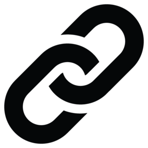

golinks es una aplicación web que le permite crear marcadores, comandos y alias inteligentes apuntando el motor de búsqueda predeterminado de su navegador web a una instancia en ejecución. Similar a bunny1 o yubnub.

Comando por cli
docker run -it -d -p 8000:8000 prologic/golinks
docker-compose simple
golinks:
image: 'prologic/golinks:latest'
container_name: golinks
ports:
- "8000:8000"
En el directorio search.db, se guardarán todos nuestros marcadores
golinks:
image: 'prologic/golinks:latest'
container_name: golinks
ports:
- "8000:8000"
command:
- "-dbpath=/container/search.db"
volumes:
- "$HOME/docker/golinks/search.db:/container/search.db"
Comado por cli
docker run -it -d --name=golinks -p 8000:8000 ugeek/golinks:arm
En el directorio search.db, se guardarán todos nuestros marcadores
golinks:
image: 'ugeek/golinks:arm'
container_name: golinks
ports:
- "8000:8000"
command:
- "-dbpath=/container/search.db"
volumes:
- "$HOME/docker/golinks/search.db:/container/search.db"
Escribe help para ver la página principal de ayuda
add [name] [url] para agregar un nuevo marcador (o sobrescribir uno existente).
remove [name] para eliminar un marcador.
list=para [[http://192.168.1.102:222/?qlist][ver todos los marcadores y comandos]].
Para agregar un marcador (o sobrescribir uno existente), ingresa add [name] [url]= como su consulta de búsqueda, donde =name= es el atajo para el marcador y =url la URL:
add imdb https://www.imdb.com
Ahora puedes entrar imdb en la barra de búsqueda para ir directamente a imdb.com.
También puede agregar %s a tu URL, que será reemplazada por su consulta de búsqueda:
add ddg https://duckduckgo.com/?q=%s
Ahora puedes usar ddg [query]= para buscar a través de DuckDuckGo, por ejemplo =ddg cosas gratis para encontrar algunas cosas gratis.
Para eliminar una búsqueda, use remove [name]=, asi que =remove ddg eliminarás la búsqueda anterior.
Por defecto viene todos estos marcadores y buscadores. Recuerda que podemos modificarlos
Nombre y URL
Comandos varios
add [name] [url]
Adds a new bookmark with the given name that will redirect to the given
url passing arguments as %s. For example:
add g http://google.com/search?btnK&q=%s
Will add a new command called 'g' which will redirect to Google's search
passing in arguments as '%s'
date
Display the current date and time
help
Display general helpful information
list
Lists all available commands.
ping
Responds with "pong <ts>" where ts is the current UNIX timestamp.
remove [name]
Removes an existing bookmark with the given name. For example:
remove imdb
Will remove the existing command called 'imdb'.
time
Display the current time
Un modo de tener todos nuestros marcadores en un único lugar centralizado para acceder desde todos nuestros dispositivos.
Te recomiendo visitar el repositorio en GitHub para conocer más opciones.
Publicado por Angel el Thursday 22 April del 2021
También te puede interesar:
Powered by org-bash-blog
Written in OrgMode with Emacs and converted to HTML with Pandoc

Este obra está bajo una licencia de Creative Commons Reconocimiento-NoComercial-CompartirIgual 4.0 Internacional.